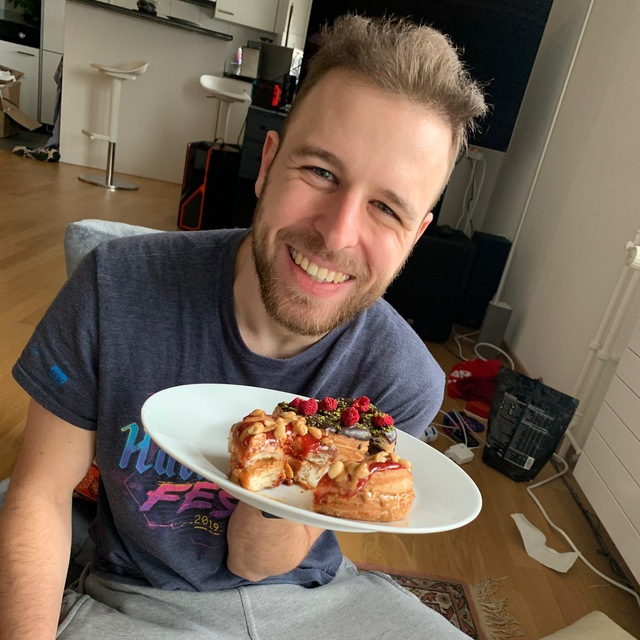

Hi, I'm Jan Nils Ferner
Over the years, I have had the fortune of calling myself many things. Programmer, scrum master, author,
project lead, student of biomedicine, overall chaotic force of nature. But you can call me Jan.
If you're here for business, you can find my professional CV here. Don't worry, I'm not as serious as my resume wants you to believe.
If you're here for business, you can find my professional CV here. Don't worry, I'm not as serious as my resume wants you to believe.

— Publications —
Author, 2017-2018
In 2017, I got pretty engaged in the Rust online community. I've created open source libraries, contributed to big Rust projects and wrote a ton of answers on StackOverflow. Sooner or later, Packt Publishing noticed me and asked me to write a book about Rust for them, aimed at intermediate developers that want to use the standard library as effectively as possible. Deciding that free time is overrated anyways, I accepted their offer. Not gonna lie, the next half a year was pretty damn tough. But I managed to do it, and I'm proud of the result! You can read the whole marketing shebang by following the link in the title, if you want.

Co-author, 2017
Me and some friends created an algorithm which combines the genetic algorithm proposed by Dr.
Stanley's
NEAT
(NeuroEvolution of Augmenting Topologies)
with modern convolutional neural networks using residual networks.
Alright, sorry about that, for the three people that haven't stopped reading yet: We think that
modern
artificial neural networks built for visual recognition are too rigid. So, we used a technique for
developing
a neural network dynamically, based on real life evolution, and modified it to generate visual
pattern
matching networks. As a bonus, the paper also contains some sections explaining the tools used and
the
most
important buzzwords and concepts of neural networks in general.
— Work Experience —

Messerli Informatik AG
Software Engineer and Scrum Master, 2014-2019
For you non-Swiss people out there: The Messerli Informatik AG is the leading software provider
for
small and really big
construction projects in Switzerland. Doesn't mean that I know anything about construction, hell
no.
I was entrusted with the underlying base libraries that power the ongoing rewrite of the
company's
software.
Server communication, update rollouts, licensing logic, functional programming utilities,
code guidelines, that kind of stuff.
But before that, my job consisted of working with, or rather around, our horribly outdated
codebase.
Out of
frustration with
the code quality,
I tended to use my time not to just put a makeshift patch on an obvious problem, but to actually
redesign the
faulty abstraction in a durable way. This attitude also grew into an interest in optimizing the
work ethic and team organizations of the company. After talking about it with the company's
executive manager (i.e. the big boss), I took a certification course as a Scrum Master and
drastically reorganized
the pilot team for our new structures.
Team Lead, 2019-2020
When the big rewrite of the Messerli legacy software started, I was chosen as the lead for the
newly
formed team up for the task.
We were quite the perfectionist bunch. We took our time, but when we delivered, we
delivered good.
Our dynamic was focused on profiting from each other as much as possible: Every pull request
went
through rigorous code reviews,
new co-workers were made to read Clean Code and our in-depth coding guidelines, all decisions I
had
to make for the team were
bounced
around everyone's head first. I cherish the time I had with my team, it was an honor working
along
such talented and genuinly passionate people.
Product Owner and Team Lead, 2020
I spent my last year at the Messerli Informatik AG as a project lead. During this time, I had to
learn
just how much coordination and politics are necessary to get stuff done on a project spanning
multiple teams. I kept my administrative roles from before my promotion, but had to reduce my
code
output
by a lot in order to meet the demands of my new position.
This was by far the most bureaucratic time of my career: protocols, agendas, meetings,
evaluations,
lots of paper. And way too much coffee.
Kanton Aargau
Examiner for Federal Diploma of Vocational Education in Computer Science, 2019-now
Alright, this one doesn't translate well into English at all. In Switzerland, this position is
known
as an
"IPA Experte für EFZ in Informatik, Fachrichtungen
Applikationsentwicklung und Systemtechnik".
It means that about three times a year, I grade the final assignment of future professional
programmers in the Kanton (i.e. substate) Aargau. This involves conducting a meeting with the
nervous
candidates where I ask them
in-depth questions about
their work, programming and IT in general in order to gauge their level of expertice.
Co-Founder and AI Researcher, 2018-2019
During our time writing the paper mentioned before, my friends and I came up with some novel
ideas
about how to
evolve a more general AI than the state of the art pattern recognition machines. We pooled
together
some money in order
to explore those ideas for a year. I credit this time with teaching me about project management:
How
to organize work, how
to be productive with no externel pressure, how to realistically plan work. I also learned how
to
plan and structure
the code base of big projects involving multiple people, creating a lasting flaire for
systems architecture.
— Education —
Berufsschulen BerufsBildungBaden
Federal Vocational Baccalaureate in Computer Software Engineering, 2014-2018
This one sounds way more impressive than it is: I simply completed the Swiss vocational
apprenticeship as
a
programmer (for the connoisseurs: including Berufsmaturität). By the way, I also took extra
courses about game design at school!
AKAD
Passerelle, 2019-2020
With my programmer's education, I was not instantly allowed to study biomedicine. I lacked 3
years
of general, non-IT knowledge.
In order to be admitted to a university, I had to either study for 3 additional years or catch
up on
them in a single year in my free time.
The latter way is called Passerelle, and it was right up my alley. This year was intense, but in
a
good way. It was truly inspiring to be
constantly exposed to such a magnitude of new ideas and scientific knowledge in such a short
period
of time. Little detail I'm proud of: I was the year's valedictorian!
University of Zurich
Bachelor of Biomedicine, 2020 and still kicking
Congratulations, dear reader, for either reading all the way until here. Or, for being good at
scrolling.
Today, I am studying biomedicine, which is a specialized biology degree focussing on the human body. It is here where I acquired my most useful skill yet: Determining the gender of a common fruit fly by eye. Thank you, thank you, keep your applause in check.
Today, I am studying biomedicine, which is a specialized biology degree focussing on the human body. It is here where I acquired my most useful skill yet: Determining the gender of a common fruit fly by eye. Thank you, thank you, keep your applause in check.